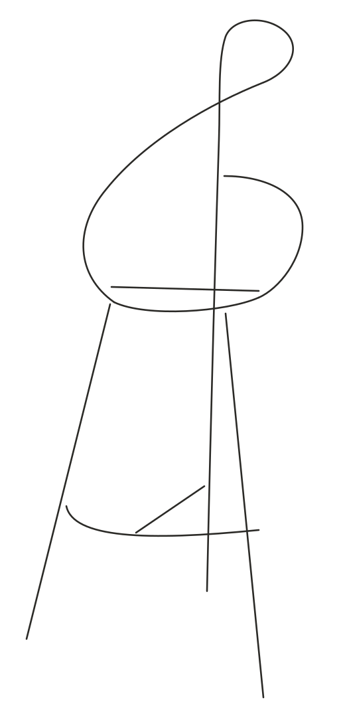
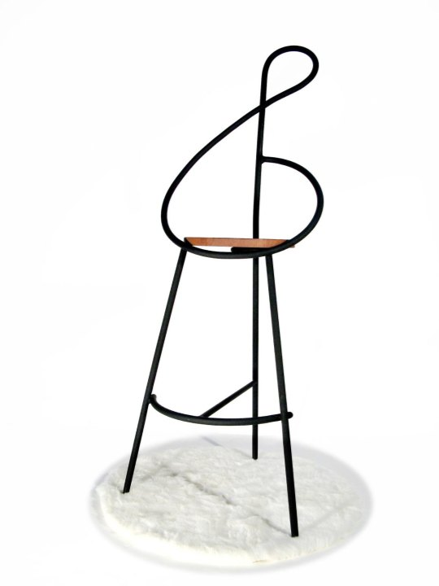
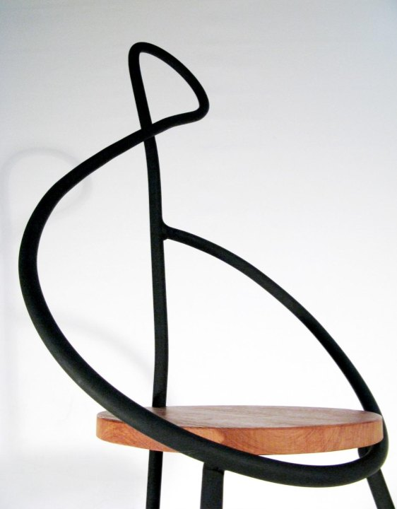
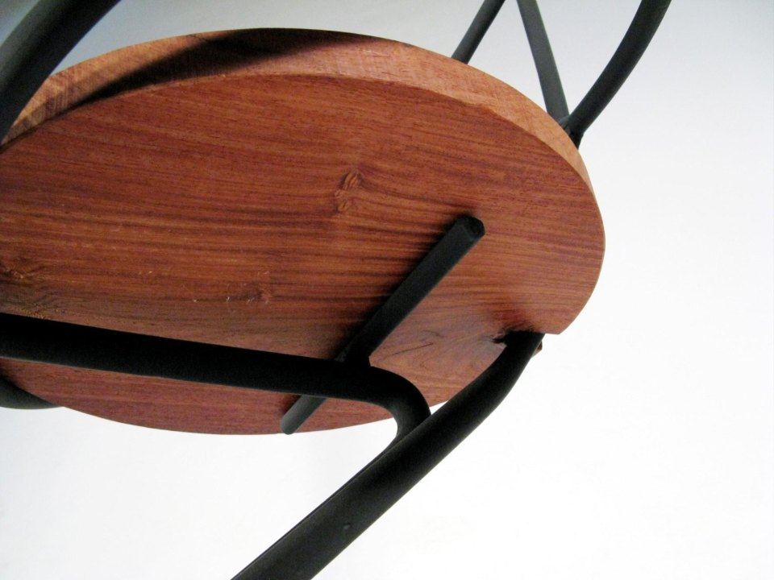

以高音譜記號為靈感，探索音樂律動轉化的可能，也讓家具成為空間中的一段旋律。
Inspired by the treble clef, this design translates musical rhythm into form, making furniture a melody within a space.
Work 000 · Stainless steel, rosewood · 2007
Gchair
2007 全國創意家具設計競賽 佳作Honorable Mention, 2007 National Creative Furniture Design Competition


以高音譜記號為靈感，探索音樂律動轉化的可能，也讓家具成為空間中的一段旋律。
Inspired by the treble clef, this design translates musical rhythm into form, making furniture a melody within a space.

